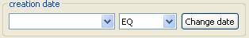

The search feature
The search feature can be used from the Oyster perspective, using the search view. In fact, it will make use of at least
another view (the search results view), so although it's possible to open the search view from any perspective
it's recommended to use it while in the Oyster perspective, to avoid cluttering the NeOn Toolkit interface with too
many views.
The search view has to sections:
- The configuration section.
- This section allows the user to select the target server that will receive the queries,
the omv class which instances you are looking for, and select the attributes used to perform the query
- The parameters section.
- This section is meant to receive the query parameters. These parameters
are property values that must be present in the instances returned by the query.
The configuration section
As it was said earlier, here are the following controls:
- Server selection combo (see server selection).
- Server selection list edition button
- OMV class selection combo. It allows to select the class of the instances to be looked for
- Attribute selection button. This allows to select which attributes from the OMV class are to
be used in the query.
- Start button. This starts the search with the given query parameters
Selecting query parameters
Once the omv class is selected, the "select attributes" button will show a list of
the attributes of the selected class.
The main controls of the attribute selection dialog are:
- Template selection combo.
- Lets the user select between a predefined list of templates.
Selecting a template will check the attributes of the template, and uncheck others.
- Select all and Deselect all buttons.
- They mark every property as selected or clears
the selection, respectively.
- The attributes section.
- Lets the user check or uncheck properties individually.
Once the property selection has been changed by pressing the "Ok" button in the attribute
selection dialog, the changes will be reflected instantly in the fields section of the search view.
The fields section
Within the fields section are located the different input controls to allow the user specify query parameters.
Depending on the type of parameter there will be a different control, with it's own way of accepting such
parameters. Here is an enumeration of the controls that may appear:
- The combo input field. It is used for parameters that will accept a single string or boolean value. The
combo will hold values used in previous queries if it needs a string value, or the values "true" and "false"
for boolean parameters. It has also a combo to let the user specify the comparator of the parameter.
- The table input field. This control is used when the parameter accepts multiple values. In this cases, the matching
results will have all values in the property. To add a value it's necessary to use first the "Add" button, and
then edit the inserted row, which has two fields, a string one for the value, and a combo for the filter type.
- The date input field. Similar to the combo field, it has a button which will bring up a dialog to select
a date. It's heavily recommended to use the dialog instead of typing the date directly, due to the fact
that the server will accept only a particular date format, and the user may type it wrongly.

The date field.
The date selection dialog.
- The domain field. Since the URI of a DMOZ topic is rather long, there is a control dedicated to this kind of
input. It shows the hierarchy of DMOZ topics (in fact, it shows only their labels to the user), and lets the user
select any number of them (holding the SHIFT key).

The search results view
When the results are returned they are shown in the Search Results View. If there are no results at all, it
will only display a message saying that no results were found. On the other hand, if there are any results, they will
be displayed in a table, where each row is an instance of the class, and each column a property.
Once the results are shown, the user may take any of the following actions:
- See the details of any instance on another view. If the user clicks twice on any result other view will show
RDF text describing the selected result.
- In the context menu (brought up by using the right mouse button over any result) the user may choose to
update it.
- The user may also select to delete the selected result.
- When the results are ontologies, the context menu allows the user to
import an ontology into an existing project.